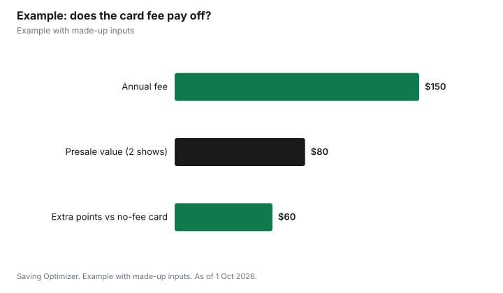

Entertainment · Canada
Credit Card Presales and Ticket Perks in Canada: Amex, Avion and Scene+
Credit card presales in Canada give eligible cardholders a chance to buy tickets before the general public, but they do not lower the price, guarantee seats or waive fees. American Express Canada's Front Of The Line program is the best-known: cardmembers can buy Amex Presale Tickets before the public on-sale and Amex Reserved Tickets for select seats, and must pay with an American Express card. Other card perks work differently: RBC Avion Rewards members can pay for Ticketmaster.ca tickets with points, up to $500 worth a day, and Scene+ points take $1 off Cineplex movies for every 100 points. A card's annual fee is worth paying for tickets only if you would use these perks for events you would buy anyway.
Key takeaways
- Amex Front Of The Line: presale and reserved tickets for cardmembers, paid with an Amex card.
- Presales are limited: not all seats, purchase limits and blackout dates may apply.
- Presale tickets keep the seller's prices, fees and refund rules.
- RBC Avion points pay for Ticketmaster.ca tickets, up to $500 worth a day, not resale.
- Scene+ points: 100 points take $1 off at Cineplex.
- Example with made-up inputs: when a card fee pays off.
How a card presale works
American Express Canada says cardmembers can buy Front Of The Line Amex Presale Tickets and Amex Reserved Tickets to some of the most in-demand concerts, theatre productions, restaurants and special events, often before the general public. Its terms explain that presale tickets are offered for select events and seats during a set period before the general on-sale, and reserved tickets are select seats held for cardmembers for a set period. In both cases, tickets must be bought with an American Express card; an American Express prepaid card cannot be used.
The same terms add important limits. The tickets are sold and fulfilled by third-party ticket sellers, not American Express, and follow the seller's, promoter's or venue's rules, prices and fees. They are subject to availability, supply may be limited, not all seats may be offered, and purchase limits and blackout dates may apply. Refunds, exchanges and resale may be prohibited by the seller. Mirvish, the Toronto theatre company, lists Front Of The Line presale and reserved tickets for shows in its 2026/27 season.
| Rule | What it means |
|---|---|
| Pay with an American Express card | Prepaid Amex cards are not accepted |
| Sold by third-party sellers | Their prices, fees and terms apply |
| Subject to availability | Supply may be limited; not all seats offered |
| Purchase limits and blackout dates | May apply |
| Refunds, exchanges, resale | May be prohibited by the seller |
Paying with points: RBC Avion on Ticketmaster.ca
RBC's Avion Rewards lets members connect their account to Ticketmaster Canada and apply points at checkout. Avion's FAQ says you can use as little as $0.01 worth of points and up to $500 worth a day, and combine points with Ticketmaster promo codes, gift cards and other payment methods. Points can only be used on original tickets sold by Ticketmaster.ca, not resale. If an event is cancelled, the portion paid with points comes back as a Ticketmaster.ca gift card rather than points, and any card portion goes back to the card. There is no redemption fee, and you do not need to be an RBC client to join Avion Rewards, though eligible earning cards are RBC products.
| Feature | Rule |
|---|---|
| Minimum redemption | $0.01 worth of points |
| Maximum redemption | $500 worth per day |
| Resale tickets | Not eligible |
| Refund of point-paid portion | Ticketmaster.ca gift card |
| Redemption fee | None |
Movies: Scene+ at Cineplex
For movies, the Scene+ program earns 3 to 6 points per dollar on Cineplex tickets and snacks and redeems 100 points for $1 off tickets, food or drinks, but not taxes, tips or alcohol. You may earn extra points when you pay with a qualifying Scotiabank credit card, and Cineplex says Scene+ members save an extra 10% on Tuesday ticket prices.
Is a card worth it for presales?
Start with the annual fee, then add only the perks you would really use. A presale has value when an event is likely to sell out and you would otherwise miss it, but it saves no money on the ticket itself. Points have a clear dollar value. Purchase protection and insurance features vary by card, so read the certificate before counting them. Many no-fee cards earn points too, so compare the extra value of a fee card against a no-fee option, not against nothing.
| Perk | How to value it |
|---|---|
| Presale access | Only if you regularly chase sell-out shows |
| Reserved ticket access | Same; seats still cost full price |
| Points toward tickets | Count at the program's published rate |
| Bonus points on entertainment | Multiply by what you really spend |
| Event or travel insurance | Read the certificate; often narrow |
Presale tips
- Sign up for artist, venue and card emails, since codes and dates are announced there.
- Log in and add your card to your ticketing account before the presale opens.
- Set an all-in budget; presale prices can be the same or higher than later prices.
- Know the purchase limit so you do not lose time in the queue.
- Read the refund and transfer terms; presale tickets may not be resellable.
- In Ontario, sellers must disclose how many tickets go to pre-sales before the sale.
Example with made-up inputs
These numbers are an example with made-up inputs. A fan pays a $150 annual fee for a card with presale access and earns points worth a made-up $120 a year on her normal spending, compared with $60 of points on a no-fee card. The fee card's extra points are worth $60, leaving $90 of fee to justify with presale access. She uses presales twice a year for shows that sold out quickly, which she values at $40 each, or $80. The card is roughly break-even, $10 short. A friend who rarely goes to big concerts would lose about $90 a year on the same card.
| Item | Value |
|---|---|
| Annual fee | −$150 |
| Extra points versus a no-fee card | +$60 |
| Presale access (2 shows at $40) | +$80 |
| Net | −$10 |

Steps
- List the events you buy in a typical year.
- Check which card programs offer presales for those venues or promoters.
- Value points at their published redemption rate.
- Subtract the annual fee and compare with a no-fee card.
- Read the presale and refund terms before buying.
- Recheck each year whether you still use the perks.
Common mistakes
- Assuming a presale means a discount.
- Paying a card fee for perks you use once.
- Trying to buy presale tickets with a prepaid card.
- Using points on resale tickets where they are not accepted.
Related: dynamic ticket pricing and ticket fees and all-in pricing.
Sources
- American Express Canada, What is the Front Of The Line program?, americanexpress.com/en-ca, as of 1 Oct 2026.
- American Express Canada, Amex Experiences: Entertainment terms, experiences.global/ca, as of 1 Oct 2026.
- Mirvish, American Express Front Of The Line tickets, mirvish.com, as of 1 Oct 2026.
- Avion Rewards, Ticketmaster FAQ, avionrewards.com, as of 1 Oct 2026.
- Scene+ Help Centre and Cineplex Deals, as of 1 Oct 2026.
- Government of Ontario, Buying tickets to events in Ontario, as of 1 Oct 2026.
- Card fees and point values in the example are made-up inputs.
Frequently asked questions
What is Amex Front Of The Line?
An American Express Canada program that lets cardmembers buy presale and reserved tickets to select concerts, theatre and events, often before the general public.
Are presale tickets cheaper?
Not necessarily. Amex says presale tickets follow the third-party seller's prices, fees and terms.
Can I use a prepaid Amex for presales?
No. American Express says presale tickets must be bought with an American Express card, not a prepaid card.
Can I use RBC Avion points on Ticketmaster.ca?
Yes. Connect your accounts and redeem from $0.01 up to $500 worth of points a day on original Ticketmaster.ca tickets, not resale.
What happens if an event is cancelled after I paid with Avion points?
Avion says the point-paid portion is refunded as a Ticketmaster.ca gift card, and the rest goes back to your other payment method.
Is a card with presales worth the annual fee?
Only if the extra points and the value you place on presale access exceed the fee compared with a no-fee card.
Researched and drafted with AI assistance and fact-checked against official Canadian sources. How we create content.
Disclosure: Saving Optimizer may earn a commission if a partner link is added later, such as a credit card offer type. No partnership is claimed on this page. Education only.